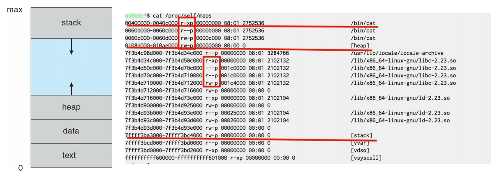
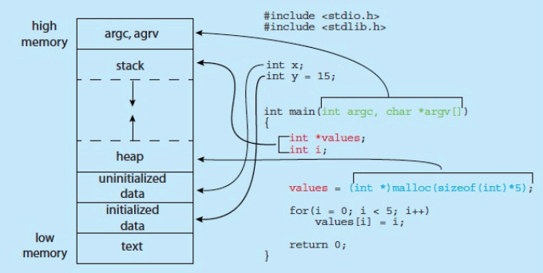
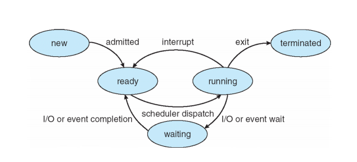
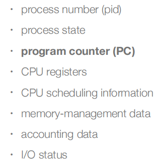
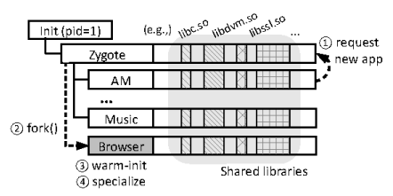
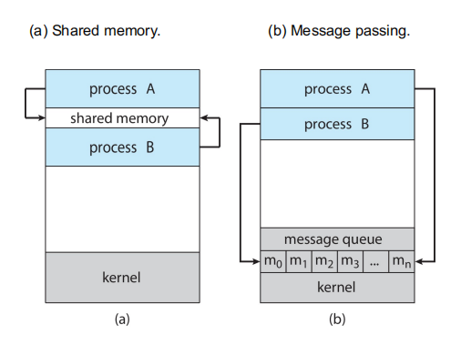
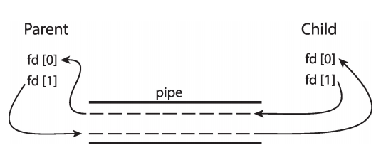
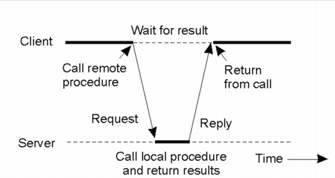

Process
Concepts
进程是一个运行中的程序，Process is a program in execution
一个程序可以有多个进程，One program can be several processes
一个进程也可以有多个程序
进程可以通过GUI或命令行启动，实际上是通过系统调用启动的
一个进程包含多个部分：
- program code，也叫做text section
- runtime CPU states
- various types of memory
- stack: temporary data，function parameters，local variables，return addresses
- data section: global variables
- heap: memory dynamically allocated during runtime
cat /proc/self/maps
cat是bin下的一个动态链接的可执行文件，由shell进程fork出来
proc文件，进程的PID dump出来给用户
self，当前进程，也就是cat这个进程

地址较低的地方是代码段，text
操作系统为每一个进程分配一个PCB的结构体，包含进程的PID等信息
Memory layout of a C program

-
栈 (high memory -> low memory)
编译器在编译生成main函数的时候，会插入函数的prolog，移动栈指针
每次函数调用的时候，才能给local variable分配内存
因此不停地把栈指针往下移，分配空间来容纳这些局部变量
对于一个进程，会默认设置栈的大小，如果递归调用的层数过多，栈会溢出
为什么局部变量要放在栈上，不能放到data段？
进程在初始化的时候，各个段的大小就确定好了，但是随着函数被调用，可能存在递归调用等，无法预测需要在memory中分配多少内存，没办法在data中存放局部变量；但是栈是可以扩大的，把局部变量放在栈上，每次为当此函数的上下文创建内存空间，直到返回再pop掉，这样就能为每一次调用的局部变量分配内存空间，是一个动态的概念。
-
堆 (low memory -> high memory)
malloc和free是libc实现的
在libc中，有一段程序维护堆数据结构，记录哪里分配掉了、哪里没有分配掉，当malloc时，由堆管理程序来管理
可能heap存在一些空洞，即使所有空洞加起来能满足请求，但是因为不连续，堆管理程序会通过系统调用和操作系统申请空间，向上增长
堆不断向上增长，栈不断向下增长，可能会发生overlap，但64位程序虚拟地址空间很大，不太可能
note：局部变量values在栈上，被填了一个地址值，但这个地址指向的地方在堆里
Process State
new, running, waiting/blocking, ready, terminated
如图是进程状态的状态图：
-
一个进程，到running状态之前，必须在ready状态排队；ready队列是当前系统内可以被调度的所有进程的集合，调度就从ready的队列中拿一个优先级最高的让它变成running状态
-
当一个进程的时间片用完之后，被调度出去，就从running变成ready状态

如果恰好，时钟中断到来的时候，CPU发现没有处于ready状态的进程的时候，就去执行idle进程，直到处于waiting状态的进程回到ready状态，再调度进程
note：I/O done的时候会发中断
idle：系统里没有其它进程可被调度的时候，调度idle，它会告诉CPU进入低功耗状态
比如，scanf函数，如果用户没有输入，进程就会在waiting状态，等待用户输入，直到用户输入完成，就能切换到ready状态，等待CPU调度才能进到running状态
Process Control Block（PCB）
所谓的“多了一个子进程”，实际上是多了一个PCB
kernel中，每个进程都要有自己的PCB，包括：

内核中需要数据结构去管理进程，是非常消耗资源的，因此我们不希望有太多的进程
在Linux中，PCB的具体实现，是C结构体task_struct，不同进程的PCB是通过双向链表连起来的
对于一个进程，它的地址空间是0~max，但不是每个地址空间用户态都能使用，只有向OS申请过才能使用，这个由memory-management data来记账
char p=0x56780; p='a';
操作系统不允许访问未申请的空间，会出错，segmentation fault
但OS是软件，CPU是硬件，上述操作实际上是个ST指令
这是因为CPU执行store的时候，先访问TLB，再查表，得到物理地址再去访问memory
但是程序中的地址是虚拟地址，需要映射到物理地址上才能访问
只有当OS记账，把虚拟地址映射到物理地址上，CPU才能访问memory中的这个地址；因此操作系统只要把可访问的地址的页表设置好，不可访问的不去做映射，CPU就能遵循OS的意图了
浮点数运算，很多CPU是不支持的，但有的CPU有fpu，硬件上支持浮点数运算
操作系统内核是不支持浮点数运算的，大部分用户态程序也不会进行浮点数运算
理论上，浮点数寄存器是需要保存起来的；但是如果下一个进程不使用浮点数寄存器，就没必要保存；只有当下一个进程使用浮点数寄存器的时候，再去保存浮点数寄存器，采用lazy-saving的思想（把保存浮点数寄存器的操作推迟到不得不做的时候再做）
编译的时候可以加个选项，支持硬浮点运算，那这个程序是可以在包含硬浮点操作的CPU上运行的；如果CPU不支持硬浮点运算，会抛出异常“非法指令”，交给操作系统内核处理，有OS做fpu emulation，返回正确结果，虽然慢一点，但不影响得到正确结果
emulation，功能模拟
如qemu实际上是个软件，模拟RISC v每一条指令的语义，在emulator里执行CPU指令；如fpu emulation，在没有浮点运算的架构上，去模拟浮点运算；emulator保证的是指令语义的执行
simulation
simulator不仅保证语义的正确性，还要模拟流水线的状态，甚至做到时钟级别的准确性
Threads
一个进程中的线程1和线程2，可能run在不同的Core上
每一个线程都要有自己单独的栈
Process Scheduling进程调度
从系统的可响应性的角度，进程调度是非常频繁的，usually in milliseconds，因为操作系统对响应性的要求非常高，对用户来说，如果点一下还要等几秒钟，我的进程才能被调度，太慢啦
但为了提高CPU的利用率出发，进程调度是很消耗资源的，又希望它不那么频繁
进程调度是通过队列的形式，链表实现的queue
进程在不同的队列 (queue) 之间迁移：因为处在不同状态的进程的PCB被放在不同的队列中
Swap In/Out
如果运行的进程数量多、进程占用的内存大，物理内存比较紧张
-
不带交换分区，操作系统会把占用内存过大的进程kill掉
-
带交换分区 (有storage)，把某个进程写到storage上，这个进程占用的物理内存就能被释放掉，降低物理内存的压力，这就是swap out
当这个进程下一次被调度的时候，由于只能操作memory，就把这个进程swap in进来，但不需要把它写到原来的内存地址上，只需要重新建立虚拟地址的映射即可
不过现在，大部分情况下内存压力不是特别大，所以不会分配交换分区
Scheduler
Scheduler需要平衡I/O-bound process和CPU-bound process的需求
I/O-bound，I/O请求比较频繁，CPU计算比较少；CPU-bound相反
通用计算机一般是I/O-bound的
Context Switch
进程切换的时候需要完成上下文切换，保存旧的进程状态、load新的进程的状态
Context-switch is overhead，操作系统越复杂，PCB保存的信息越多，上下文切换需要的时间越长
上下文切换的时间和硬件支持有关，比如CPU里有两套general purpose registers，只有一套执行单元，就直接load另一套register set就好了，不需要save PCB，这就是Hyper Threading
同一时刻只能执行一个硬件线程，但是切换非常快，让人觉得有两套CPU在执行，省去了save和load的操作
Process Creation
init进程是操作系统运行之后的第一个进程，是操作系统唯一显式地运行的一个进程。父进程创建子进程，子进程再创建其它进程，形成进程树
design choices:
-
可能的资源共享有三种：all，subset，none
-
父进程和子进程，内存资源是不共享的，共享的资源极其少
• child duplicates parent address space (e.g., Linux)
• child has a new program loaded into it (e.g., Windows)
-
父进程和子进程的执行
• parent and children execute concurrently
• parent waits until children terminate
UNIX/Linux的system call：fork(), exec(), wait()
子进程退出的时候，要报告信息给父进程
Process Termination
进程执行到最后一条指令，会要求kernel删除这个进程（exit）
-
由OS，通过 wait 把返回值从子进程给到父进程
-
进程占有的资源被操作系统回收
父进程对子进程有一定的控制权，父进程可能终止子进程的执行：
-
child has exceeded allocated resources
-
task assigned to child is no longer required
-
if parent is exiting, some OS does not allow child to continue, 所有的子进程都会被terminated，称为cascading termination
zombie vs orphan：
当子进程结束的时候，操作系统不能马上把子进程从process table中删掉，他要等到父进程call wait()
-
zombie (僵尸进程)：子进程已经结束执行了，但是父进程还没有call wait
-
orphan (孤儿进程)：父进程马上就结束了，没有call wait，子进程要执行的任务又很长，当子进程结束之后，操作系统会把子进程的parent赋为systemd
systemd，是用户态进程，它会周期性地call wait()
Android Process Importance Hierarchy
两个不同的进程之间是相互隔离的，但是进程和进程之间能通过ptrace等syscall去trace另一个进程；进程和进程之间的隔离，不是安全隔离，只是资源不共享
安卓操作系统是通过uid来隔离的，对于每一个APP，uid是不一样的
Linux操作系统，进程和进程能操作的文件是不隔离的，因为都是同一个用户在操作
安卓系统进程优先级：
- 前台进程 (屏幕上可见的)优先级最高
- 后台进程优先级较低
- 空进程优先级最低

- 安卓启动之后，init进程会load起来Zygote进程，之后使用APP的子进程都是由Zygote进程的子进程
- 在启动Zygote的时候，会把所有第三方库都load到物理内存中，虽然加载比较慢，但没关系，这是应用启动时一次性做的
- 之后fork子进程的时候，由于子进程是父进程地址空间的拷贝，在子进程的虚拟地址空间中，有libc等库，由于物理内存中以及有第三方库了，启动app时，不同从external storage中加载库
- 这样实现了预加载，提高了系统的性能
COW机制 (copy on write)：
- 子进程拷贝一份父进程的资源，并不是真的直接在PA中拷贝了一份，对于只读的部分，是将子进程中虚拟地址的映射同样映射到PA中；对于可读可写的内存，映射到新开辟的地方
- 但这违背了lazy的原则，因为子进程不一定会修改data的值；解决方案是，在拷贝这段内存的时候，把data段标记为read only，如果子进程运行的时候对data进行了写入，就会抛出异常，操作系统发现之后再copy一段data区域
因此就实现了把分配数据内存推迟到第一次写入的时候，而且开辟内存是以page为粒度的，可以只拷贝需要修改的page
多进程架构：Chrome Browser
Google Chrome Browser是多进程的，有三种类型的进程：
- Browser process manages user interface, disk and network I/O
-
Renderer process renders web pages, deals with HTML, Javascript. A new renderer created for each website opened
• Runs in sandbox restricting disk and network I/O, minimizing effect of security exploits
-
Plug-in process for each type of plug-in (插件)
插件的进程封在一个隔离的进程里，限制这个进程能使用的system call
- Remote Process Call
- 对于不可信的行为多的进程，就对它的行为进行限制
Interprocess Communication
一个系统中的进程可以是独立的也可以是协作的
- independent process: process that cannot affect or be affected by the execution of another process
- cooperating process: processes that can affect or be affected by other processes, including sharing data
•reasons for cooperating processes: information sharing, computation speedup, modularity, convenience, Security
·cooperating processes需要IPC 3. IPC的两种模型
Shared memory：灵活方便，直接往memory中写就可以
Message passing：多进程之间通信时，消息队列是构建好的

inter*** 过程之间的
intra*** 过程之内的
Message Passing
POSIX Shared Memory
-
进程先创建共享内存段
shm_fd = **shm_open**(name, O CREAT | O RDWR, 0666); -
也可以用于打开一个已经存在的段
-
设置对象的大小：
**ftruncate**(shm_fd, 4096); -
使用
mmap()来内存映射一个文件指针到共享内存对象操纵文件变成操纵内存，对文件的操纵效率变高
使用mmap()返回的指针完成对共享内存的读写
Pipes
管道通信是消息队列的一种实现方式，允许本地的两个进程进行通信
-
普通管道 ordinary pipes

-
named pipes
Client-server Communication
如果进程A想要调用进程B的函数，并得到返回值，A和B可以是同一台机器的，也可以是网络连接的，即跨进程函数调用，实现这个要用到RPC (remote process call)
-
怎么知道远端进程提供了什么函数来调用
通过桩代码实现远端调用
任何一个服务进程上线的时候，需要到中心化的注册处注册，之后这个函数就会暴露给RPC1 2 3 4
//A int a=Stub.a(2,3); //B int a(int, int);客户进程调用的时候，去注册处查询
服务器把函数调用的参数打包，送给服务进程，执行完，再把返回值打包给客户端，都是以字节流的形式
安全问题：
客户端丢过来的函数是否是已经注册过的函数，如果没有注册过，客户端可以欺骗服务端，调用他本不该调用的函数并拿到返回值，安全性有问题
-
RPC
